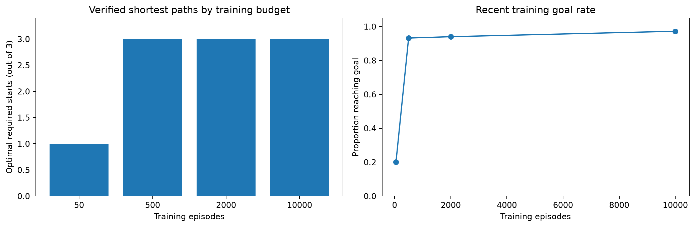
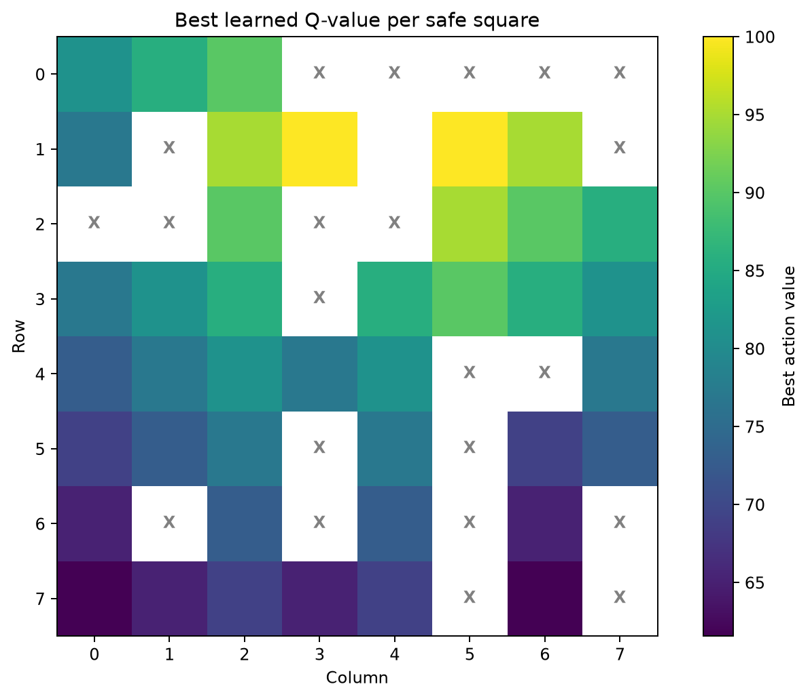

I trained a Q-Learning agent to navigate Professor Muturi's exact 8 × 8 Cliff grid. Choose any of the three official starts to inspect its learned route, length and independent shortest-path verification.
Each orange or colored square represents part of the official grid. The highlighted path is computed by my Python notebook and stored for reproducible visualization.
I compared 50, 500, 2,000 and 10,000 episodes using the same seed. A model trained for only 50 episodes did not find all three shortest routes.

I update the estimated reward for each action during training. This diagram displays the best action value at each safe square after 10,000 episodes.

The car learns from trial and error. I assign positive reward for reaching the destination, penalties for falling and a small cost for each extra step. With more experience, the Q-table favors actions that lead to the Goal. I then test the learned action choices and confirm that they are the shortest available paths.
Alpha: 0.30 | Gamma: 0.96 | Seed: 2026 | Epsilon: 0.60 gradually approaching 0.03 | Training: 10,000 episodes
This is a simplified deterministic grid-world model. It does not represent real sensor noise, traffic or dynamic obstacles.
I encoded the diagram as eight eight-character rows and asserted that the Cliff count, Goal and three starts match the slide exactly.
I compare the learned greedy policy against independent BFS distances. I separately check that each move is adjacent, avoids all Cliffs and ends at the Goal.
No. BFS is only my independent audit. The Q-table is trained with numerical rewards, exploratory movements and temporal-difference updates.
With fewer learning experiences, some state-action values are not sufficiently updated. My seeded 50-episode model solves only one of the three required paths optimally.
My notebook and my first-person presentation guide explain alpha, gamma, epsilon, reward design, episode count and model limitations.
Read my complete 33-question guide · Review the assignment requirements